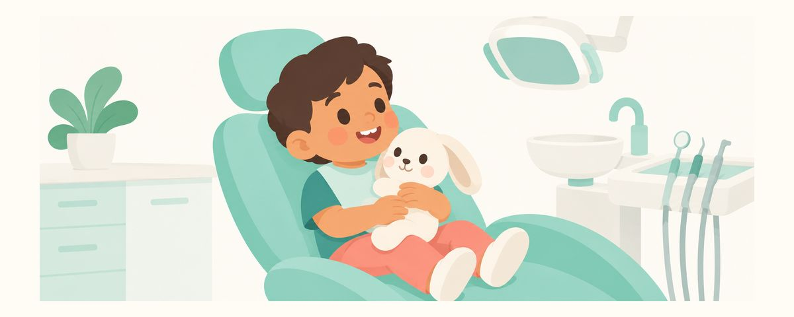

Sédation ou anesthésie générale chez le dentiste : est-ce sans danger pour l'enfant ?
Après une seule anesthésie courte, les études ne trouvent pas de différence de QI. Ce qu'elles montrent, les questions de sécurité à poser et la préparation du jour J.
En un coup d'œil
- Les études n'ont trouvé aucune différence de QI après une seule anesthésie courte
- Demandez qui surveille votre enfant et quel matériel d'urgence est disponible
- N'acceptez pas de sédatif à donner à la maison
Quand un enfant a beaucoup de caries ou qu'il est trop jeune pour supporter les soins, le dentiste peut proposer de soigner sous sédation ou sous anesthésie générale. Beaucoup de parents s'inquiètent alors : « Une anesthésie si jeune, est-ce mauvais pour son cerveau ? » Voici, pas à pas, ce que montrent les études jusqu'à présent, et ce qu'il faut vérifier si on vous le propose.
Anesthésie et développement du cerveau : ce que l'on sait
L'inquiétude est partie d'un avertissement de l'agence américaine des produits alimentaires et des médicaments (FDA) en 2016 : chez les enfants de moins de 3 ans, l'utilisation répétée de médicaments anesthésiques, ou prolongée au-delà de 3 heures, pouvait affecter le développement du cerveau. Cet avertissement reposait surtout sur des études chez l'animal, et sa portée chez l'humain n'était pas claire. Dans la même annonce, la FDA a aussi indiqué qu'une exposition unique et courte a peu de chances de nuire au comportement ou à l'apprentissage.
De grandes études chez l'enfant ont suivi.
- Une étude a comparé, chez des nourrissons, une anesthésie générale d'un peu moins de 1 heure à une anesthésie locorégionale éveillée : plus tard, aucune différence de QI.
- Une étude a comparé des enfants anesthésiés petits à leurs frères et sœurs qui ne l'avaient pas été : là non plus, aucune différence de QI.
- Une étude portant sur des enfants ayant eu une ou plusieurs anesthésies n'a pas non plus trouvé de différence de QI. Les enfants anesthésiés plusieurs fois présentaient de petites différences dans certaines habiletés motrices fines, la vitesse de lecture et les problèmes de comportement signalés par les parents, mais on ne sait pas clairement si l'anesthésie ou une autre cause en est responsable.
En résumé, l'inquiétude actuelle porte sur les anesthésies répétées ou longues chez les jeunes enfants, et de nombreuses études n'ont trouvé aucune différence de QI après une seule anesthésie courte. Aucun médicament n'a été démontré comme particulièrement plus sûr qu'un autre.
Autre point à connaître : la sédation est un continuum. Même quand on vise une sédation légère, elle peut devenir plus profonde selon l'enfant. Le cœur de la sécurité n'est donc pas le choix du médicament, mais qui surveille l'enfant, et avec quel matériel.
Si on vous la propose, vérifiez et préparez-vous ainsi
Notez les questions ci-dessous avant la consultation. Les poser est tout à fait normal.
- Quelle sera la profondeur de la sédation ? Qui donne le médicament, et qui surveille mon enfant ?
- Pour une sédation profonde ou une anesthésie générale, un professionnel de l'anesthésie dédié, différent de la personne qui soigne, surveille-t-il uniquement mon enfant ?
- Le taux d'oxygène, le rythme cardiaque et la respiration seront-ils surveillés en continu ? Du matériel d'urgence et du personnel formé aux soins d'urgence sont-ils sur place ?
- Tout sera-t-il soigné cette fois-ci, ou faudra-t-il une autre anesthésie ? Combien de temps cela prendra-t-il ?
- Une application de fluor, un médicament qui stoppe les caries ou des obturations provisoires pourraient-ils permettre de reporter la sédation ? Quels sont les risques si l'on attend ?
Le jour des soins :
- Respectez exactement les consignes de jeûne de l'établissement. Selon l'Académie américaine de dentisterie pédiatrique, les liquides clairs s'arrêtent 2 heures avant, le lait maternel 4 heures avant, et le lait infantile, le lait ou un repas léger 6 heures avant. L'estomac vide réduit le risque que des vomissements passent dans les voies respiratoires pendant l'anesthésie.
- Pendant la sédation, ne quittez pas la zone de soins.
- Pour le retour, venez si possible à 2 adultes : l'un conduit, l'autre surveille uniquement la respiration de votre enfant.
- Si votre enfant s'endort à la maison, couchez-le sur le côté et vérifiez souvent qu'il respire bien.
Questions fréquentes
Ne peut-on pas repousser les soins pour éviter l'anesthésie ?
Demander s'il existe des solutions pour reporter est une bonne idée. Mais repousser trop longtemps augmente les risques de douleur et d'infection. Décidez avec l'équipe soignante, selon l'état de votre enfant.
Il est un peu enrhumé : peut-on maintenir la date prévue ?
La toux ou le nez qui coule peuvent gêner les voies respiratoires. Prévenez l'établissement à l'avance et voyez ensemble s'il faut reporter.
Et si on nous dit qu'il faudra plusieurs anesthésies ?
Demandez s'il est possible de tout soigner en une fois, et pourquoi il faudrait plusieurs séances. Les petites différences observées après plusieurs anesthésies n'ont pas de cause clairement établie : discutez bien de la nécessité et du nombre avec l'équipe soignante.
Quelle est la différence entre sédation et anesthésie générale ?
La sédation utilise un médicament pour rendre l'enfant détendu et somnolent ; l'anesthésie générale permet de soigner pendant qu'il dort complètement. Dans les deux cas, plus la sédation est profonde, plus une personne dédiée à la surveillance et le matériel sont importants.
Dans ces cas, contactez tout de suite l'équipe soignante
- On vous a remis un sédatif à donner à la maison avant les soins (ne le donnez pas, renseignez-vous d'abord)
- Votre enfant a de la fièvre, tousse ou a le nez qui coule le jour des soins
- Les consignes de jeûne n'ont pas pu être respectées
- Après le retour, sa respiration semble anormale ou il ne se réveille pas normalement quand on le stimule (urgences immédiatement)
- En attendant les soins, votre enfant a mal aux dents ou la gencive gonfle
Recevez-les au bon moment
Saisissez la date de naissance de votre enfant (ou la date prévue d'accouchement) dans l'app Calendrier Dentaire et ces articles vous parviendront sous forme de rappels au bon moment. Gratuit, sans inscription.
Sources
- FDA · Midazolam in 0.9% Sodium Chloride Injection label (5.11 Pediatric Neurotoxicity) (2024)
- AAPD · Guidelines for Monitoring and Management of Pediatric Patients Before, During, and After Sedation (AAP/AAPD) (2025)
- AAPD · Preparing for Your Child's Sedation Visit (2022)
- SmartTots · GAS, PANDA and MASK: no evidence of clinical anesthetic neurotoxicity (2019)
Les informations de cette application sont fournies à des fins éducatives générales et ne remplacent pas une consultation professionnelle. Parlez de la situation de votre enfant avec un dentiste.